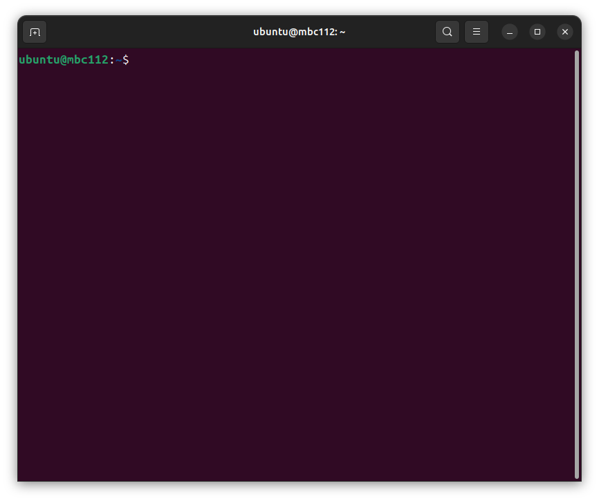

4. Linux入門¶
基本的なLinuxの端末の操作方法を学習します。
4.1. コマンドラインとは¶
コマンドラインとは、文字だけでコンピュータを操作するためのものです。 サイトやアプリなどを開発する上で必須のツールです。
4.2. コマンド（命令）¶
ターミナルと呼ばれるものにコマンド（命令）を入力することで、 コンピュータに指示を与えることができます。 これから、実際にどのようなコマンドがあるかを見ていきましょう。
4.3. ターミナルの起動¶
ターミナル（端末）を起動するとウィンドウが開き、下記のような文字列が表示されます。
4.4. ディレクトリの中身の表示¶
ディレクトリの中身を確認するにはlsコマンドを使います。 「ls」と打つだけでカレントディレクトリの中身を確認することが できます。
ubuntu@mbc084:~$ ls
Desktop Documents Downloads Music Pictures Public Templates Videos snap
ubuntu@mbc084:~$
4.5. ディレクトリの移動¶
ディレクトリを移動するためにはcdコマンドを使います。 「cd ディレクトリ名」とすることで、 指定したディレクトリに移動することができます。
ubuntu@mbc084:~$ cd Downloads
ubuntu@mbc084:~/Downloads$
「..」 は、一つ上のディレクトリを意味します。
ubuntu@mbc084:~/Downloads$ cd ..
ubuntu@mbc084:~$
また、cdコマンドをディレクトリを指定せずに実行すると、 ホームディレクトリに戻ります。
ubuntu@mbc084:~$ cd Downloads
ubuntu@mbc084:~/Downloads$ cd
ubuntu@mbc084:~$
4.6. カレントディレクトリの確認¶
コマンドラインでは、現在作業しているディレクトリを 把握していることが大切です。 そのため、作業中のディレクトリを確認できるpwdコマンドがあります。 pwdコマンドを実行すると、ルートディレクトリからカレントディレクトリ までの階層がすべて表示されます。
ubuntu@mbc084:~$ pwd
/home/ubuntu
ubuntu@mbc084:~$
4.7. ファイルの作成¶
ファイルを作成するには、touchコマンドを使います。 「touch ファイル名」と入力して実行することで、 空のファイルを作成することができます。
ubuntu@mbc084:~$ touch ros.txt
ubuntu@mbc084:~$ ls
Desktop Downloads Pictures Templates ros.txt
Documents Music Public Videos snap
ubuntu@mbc084:~$
4.8. ファイルの編集¶
テキストエディタnanoを使って「ros.txt」を編集します。 viなど他のエディタを使いたい場合は、それを使ってください。
ubuntu@mbc084:~$ nano ros.txt
保存するときはCtrl + S、終了するときはCtrl + Xを押してください。
4.9. ファイルの中身の表示¶
コマンドでファイルの中身を表示することができます。 それには、catコマンドを使います。 catコマンドは「cat ファイル名」と入力することで使うことができます。
ubuntu@mbc084:~$ cat ros.txt
ros robot programming
4.10. コマンドのエラー¶
catコマンドを実行したときに、 存在しないファイルを指定するとエラーが出力されます。 エラーが出た場合は、 実行したコマンドは無効になりますので注意してください。
ubuntu@mbc084:~$ cat bos.txt
cat: bos.txt: そのようなファイルやディレクトリはありません
4.11. 補間機能¶
コマンドラインには補間機能というものがあります。 補間機能とは、ファイル名やディレクトリ名を入力するときに、 ファイル名の入力途中にTabキーを押すことで、 残りのファイル名を補間してくれる機能です。 これを使うことにより、効率がよくなるだけでなく、 先程のようなファイル名によるエラーを防ぐことができます。
ubuntu@mbc084:~$ cd ~/M [Tab]
ubuntu@mbc084:~$ cd ~/Music/
ubuntu@mbc084:~/Music$
4.12. ディレクトリの作成¶
コマンドを用いて、新たにディレクトリを作成することもできます。 ディレクトリを作成するには、mkdirコマンドを使います。 mkdirコマンドは「mkdir ディレクトリ名」と入力することで 使うことができます。
以下の例では、テンポラリディレクトリ(/tmp/)に、 test-directoryという名前のディレクトリを作成しています。 (テンポラリディレクトリは終了時にクリアされて空になります。)
ubuntu@mbc084:~/Music$ cd /tmp/
ubuntu@mbc084:/tmp$ ls
.....
ubuntu@mbc084:/tmp$ mkdir test-directory
ubuntu@mbc084:/tmp$ ls
.....
test-directory
.....
ubuntu@mbc084:/tmp$
4.13. ファイルの移動¶
ファイルを移動させるには、mvコマンドを使います。 「mv ファイル名 ディレクトリ名」とすることで、 指定したディレクトリにファイルを移動させることができます。
ubuntu@mbc084:/tmp$ cd
ubuntu@mbc084:~$ mv ros.txt Documents/
ubuntu@mbc084:~$ cd Documents/
ubuntu@mbc084:~/Documents$ ls
ros.txt
ubuntu@mbc084:~/Documents$
4.14. ファイル名の変更¶
mvコマンドは、ファイル名を変更することにも使えます。 「mv ファイル名 新しいファイル名」とすることで ファイル名を変更できます。
ubuntu@mbc084:~/Documents$ mv ros.txt ros2.txt
ubuntu@mbc084:~/Documents$ ls
ros2.txt
ubuntu@mbc084:~/Documents$
4.15. ファイルのコピー¶
ファイルをコピーするには、cpコマンドを使います。 「cp コピーするファイル名 新しいファイル名」 とすることでコピーすることができます。
ubuntu@mbc084:~/Documents$ cp ros2.txt ros3.txt
ubuntu@mbc084:~/Documents$ ls
ros2.txt ros3.txt
ubuntu@mbc084:~/Documents$
4.16. ディレクトリのコピー¶
cpコマンドでは「-r」を付けることで、 ファイルだけでなくディレクトリもコピーすることができます。 「cp -r コピーするディレクトリ名 新しいディレクトリ名」 とすることでコピーできます。
cpコマンドでは、「-r」をつけずにディレクトリをコピーしようとすると、 エラーが出力され、コピーは実行されません。
4.17. ファイルの削除¶
ファイルを削除するには、rmコマンドを使います。 「rm ファイル名」とすることで削除できます。
ubuntu@mbc084:~/Documents$ rm ros3.txt
ubuntu@mbc084:~/Documents$ ls
ros2.txt
ubuntu@mbc084:~/Documents$
4.18. ディレクトリの削除¶
rmコマンドは「-r」を付けることで、 ディレクトリも削除することができます。 cpと同様、「-r」を付けないとエラーが出力されます。
4.19. 実行中のプログラムの停止¶
実行しているコマンドを途中で止めたい場合には、 Ctrl+cを入力します。 下記の例は、yesコマンド(yと表示し続けるコマンド)を実行、 Ctrl+cでそれを停止しています。
ubuntu@mbc084:~/Documents$ yes
y
y
y
....
y
^C
ubuntu@mbc084:~/Documents$
4.20. コピー＆ペースト¶
端末の画面中でのコピー＆ペーストには、 キー入力で行う方法と、マウスのみで行う方法があります。 キー入力で行う際は、コピーしたい文字列を選択して Ctrl+Shift+cでコピー、Ctrl+Shift+vでペーストします。
ubuntu@mbc084:~/Documents$ cd
ubuntu@mbc084:~$ ls
Desktop Documents Downloads Music Pictures Public Templates Videos snap
[Desktopを選択して（ドラッグして）Ctrl+Shift+c]
ubuntu@mbc084:~$ cd [Ctrl+Shift+v]
ubuntu@mbc084:~$ cd Desktop
ubuntu@mbc084:~/Desktop$
なお、ブラウザなど、端末以外のソフトでは、Ctrl+cでコピーができます。
マウスのみでコピー＆ペーストを行う際は、 コピーしたい文字列を選択して、 そのまま中ボタンをクリックすることでペーストします。
ubuntu@mbc084:~/Desktop$ cd
ubuntu@mbc084:~$ ls
Desktop Documents Downloads Music Pictures Public Templates Videos snap
ubuntu@mbc084:~$ cd [選択して（ドラッグして）中クリック]
ubuntu@mbc084:~$ cd Desktop
ubuntu@mbc084:~/Desktop$
4.21. 端末を複数開く¶
ロボットのプログラムを実行する際、 複数の端末ウインドウを使って操作する場合があります。 Ctrl+Shift+nで新しいウインドウを、 Ctrl+Shift+tで新しいタブを開くことができます。
4.22. コマンドの履歴¶
端末のコマンド入力時に、上キーを押すと、 これまでに入力したコマンドを再度呼び出すことができます。
$ [上下キー]
4.23. もっと詳しく知りたい場合は¶
詳しくは、 ubuntuチュートリアル などを参照してください。